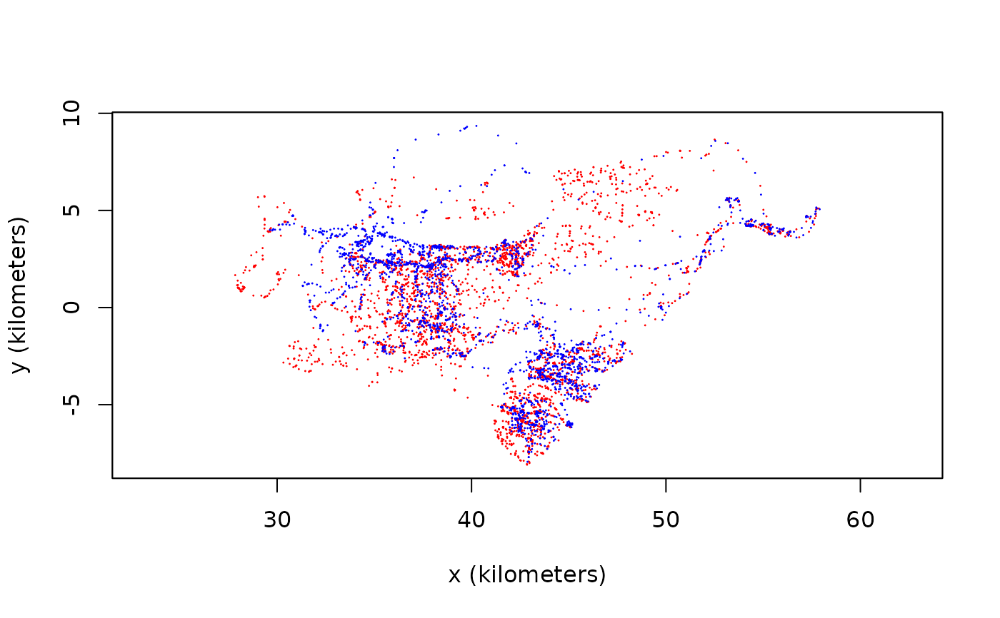

Estimate the proximity of two individuals
difference.RdGiven a pair of telemetry objects and ctmm movement models, predict their location differences or midpoints at shared times and estimate their distances.
difference(data,CTMM,t=NULL,...)
midpoint(data,CTMM,t=NULL,complete=FALSE,...)
distances(data,CTMM,t=NULL,level=0.95,...)
proximity(data,CTMM,t=NULL,GUESS=ctmm(error=TRUE),debias=TRUE,level=0.95,...)Arguments
- data
A
listof twotelemetryobjects.- CTMM
A
listof twoctmmmovement-model objects.- t
An optional vector of times or range of times over which to predict the location differences.
- complete
Additionally calculate timestamps and geographic coordinates.
- level
Confidence level for the distance/proximity estimate.
- GUESS
An optional
ctmmobject to specify the candidate model parameters of the location differences.- debias
Include inverse-\(\chi^2\) bias corrections.
- ...
Options passed to
ctmm.select.
Details
The difference function predicts the location difference vectors, \((x_A-x_B,y_A-y_B)\), for a pair of individuals, \(\{A,B\}\), at overlapping times. The midpoint function predicts the location midpoints, \((x_A+x_B,y_A+y_B)/2\), for a pair of individuals. The distances function further estimates the instantaneous distances between individuals. The proximity function fits an autocorrelation model to the output of difference, and then compares the mean-square distance between the individuals to what you would expect if the two individuals were moving independently.
Value
difference and midpoint output telemetry objects of the location differences and midpoints with prediction covariances. distances outputs a data.frame of distance estimates with confidence intervals. proximity outputs a ratio estimate with confidence intervals, where values <1 indiciate that the two individuals are closer on average than expected for independent movement, 1 is consistent with independent movement, and values >1 indicate that the individuals are farther from each other on average than expected for independent movement. Therefore, if the CIs contain 1, then the distance is insignificant with a p-value threshold of 1-level (two-sided) or half that for a one-sided test.
See also
Examples
# \donttest{
#Load package
library(ctmm)
# load buffalo data
data(buffalo)
# select two buffalo that overlap in space and time
DATA <- buffalo[c(1,3)]
# plot the two buffalo
plot(DATA,col=c('red','blue'))
#> DOP values missing. Assuming DOP=1.
#> DOP values missing. Assuming DOP=1.

FITS <- list()
for(i in 1:2)
{
GUESS <- ctmm.guess(DATA[[i]],interactive=FALSE)
# in general, you want to use ctmm.select
FITS[[i]] <- ctmm.fit(DATA[[i]],GUESS)
}
# calculate difference vectors
DIFF <- difference(DATA,FITS)
# plot the difference vectors with prediction-error ellipses
plot(DIFF)
 # calculate the proximity statistic
# disabling location error for speed
proximity(DATA,FITS,GUESS=ctmm(error=FALSE))
#> low est high
#> 0.2336486 0.3972443 0.6333092
# }
# calculate the proximity statistic
# disabling location error for speed
proximity(DATA,FITS,GUESS=ctmm(error=FALSE))
#> low est high
#> 0.2336486 0.3972443 0.6333092
# }